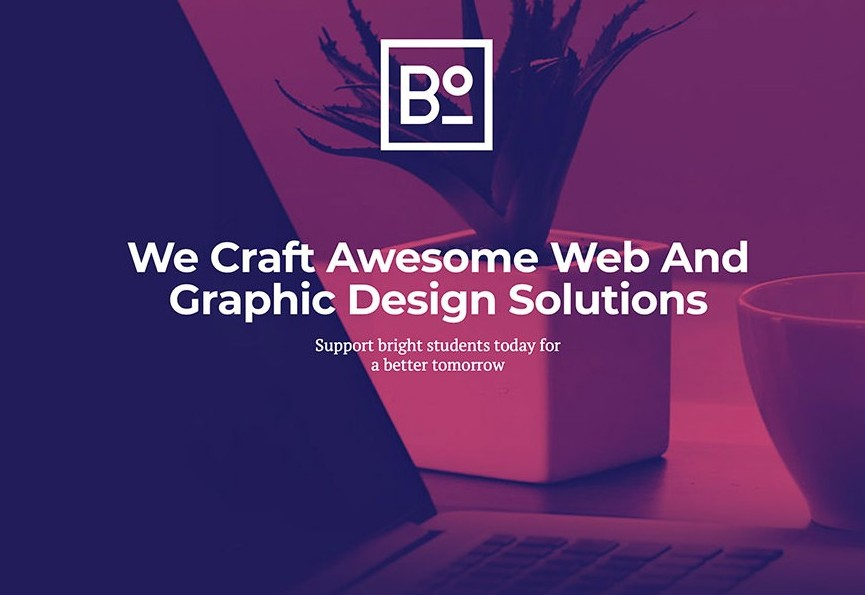

Aims and Objectives
I aspire to be a Web designer and application programmer. To be able to build wedsite for people's companies and businesses and build apps that will facilitate stuff and their managment for others in their daily transactions possible from home, street and offices.
I have been motivated by my able lecture(s) and I aspire to be like them or even more as God gives me the opportunity with knowledge that will be impacted into me and effort I put into it and also understanding what am been told to do to the best of my abilities and give my best to what I have to do.